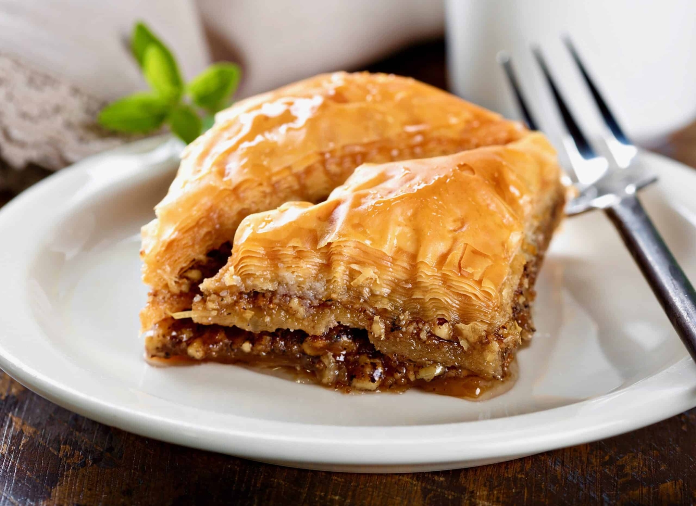

Baklava

Description
Lebanese baklava is very special occasion dessert that we eat during the holidays, after breaking our fast for
Ramadan or during big events with family. What makes this Lebanese baklava recipe unique from other types of
baklava is the aromatic simple syrup flavored with orange blossom water.
Ingredients
- Phyllo Sheets
- Clarified Butter or Ghee
- Walnuts
- Sugar
- Simple Syrup
How To Make Baklava
- Place a layer of phyllo pastry sheets in the bottom of a prepared and greased pan.
- Add the mixture of crushed walnuts and sugar evenly on top, smoothening out with a spatula.
- Add the rest of the phyllo sheets carefully on top.
- Cut into diamonds and pour over the clarified butter. Bake.